摘要：3 分钟看懂本周
术语见文末小词典1一句话
全世界的钱在变贵（利率上行），这是今年最大的主线。油价决定它涨得多快，AI 决定它跌不下来，美国三个关键人物在拼命"人工维稳"，但都是治标不治本。对投资者来说，现在不适合押单边，适合做"强的对弱的"相对交易。
2为什么钱在变贵：两个推手
推手一：油价（快变量）。美伊冲突这周全面升级，而且主动权在伊朗手里：打击目标从军队扩大到油田、炼厂和油轮，也门胡塞武装也加入进来。霍尔木兹海峡（全球约五分之一石油的必经之路）运费和保险费创新高，公开的通航量创新低。但卫星显示其实还有不少船在"偷偷走"，所以彻底断供的概率很低。我们的判断：油价在 100 美元以上会待一段时间，但越往上涨，继续涨的劲越小，跌的赔率越大。
推手二：AI（慢变量）。OpenAI 的 GPT-6 Astra 是一次真正的质变：AI 从"会回答问题"变成"会替你干活"（管项目、操作电脑、连机器人）。这意味着企业真的愿意为 AI 付钱了，2023-2025 年"建这么多算力谁买单"的质疑有了答案。但坏消息是：经济越好，美联储越没理由降息，所以 AI 越强，利率压力反而越大。
3美国：加息条件已经具备
8 月美国新增就业 16.2 万人，远超预期。更关键的是结构：AI 数据中心建设带动建筑业 +2.2 万、制造业 +1.6 万，说明 AI 的红利真的流到了传统行业（中国这一步传导偏弱）。代价是信息、金融行业继续裁员，AI 替代白领已成事实。现在美联储更怕通胀、不怕失业，而且美国劳动力总量在缩水，降息的大门基本关上了。
财长贝森特把长期国债回购上限从 20 亿翻到 60 亿美元想压住利率，市场没买账，10 年期美债收益率触及三年新高。我们用一个框架解释为什么"无解"：特朗普守油价、贝森特守国债、沃什（美联储）守科技估值，三人越是精准地"做 T"，越说明这套秩序离不开人工维稳。9 月 17 日 FOMC 是分水岭：一次性加息 = 利空出尽；开启加息周期 = 利空强化。
4中国：3600 亿注资，别当牛市信号
财政部这周第四次给金融央企注资，3000 亿特别国债 + 600 亿原股东，合计 3600 亿，六大行全部补齐，还首次把保险公司和政策性银行纳入。我们的核心观点：这补的是银行"能放贷的额度"，不等于银行"真的会放贷"，更不等于企业和居民"真的想借"。大行净息差只有约 1.3%，放贷不赚钱，钱更可能流向国债和优质央企，而不是民企。历史经验是注资到信用真正加速要 1-2 年。对股市：银行股估值修复但 ROE 被摊薄；保险资金会多买高股息和新经济龙头做"底仓"，能降低波动，但注资额 ≠ 净买入，不必然推高指数。
数据面：8 月出口同比 +25%，而且是靠涨价而不是靠降价冲量；PPI 回升靠的是上游涨价和输入性因素，不是国内需求变好；汽车、建材等旧经济依然过剩。
5怎么配：不做单边，做相对
受压的：贵金属、股指（利率是它们的敌人）；有色只是部分计价，新经济金属强于旧经济金属。看多的：煤炭和国内"土鳖品种"，能源链（原油→成品油→煤）和地缘（俄乌、美伊、中蒙）两头推，可能贯穿整个下半年，且独立于海外变量。纠结的：化工短期"看空不做空"，甚至要考虑多配对冲，等油价见顶的右侧信号。A 股科技缩圈、更看基本面，沪深 300 / 中证 500（IC）好于中证 1000（IM）。产业链利润上游赚、中游亏、下游弱，所以单边裸多 ✕，跨品种多空对冲 ✓。额外变量：9 月底习特会，基调是"管控下的稳定"，若科技制裁松动会提振风险偏好。
未来两周关键日程
- 09-11美国 8 月 CPI：沃勒"9 月不加息可能性"的前提
- 09-17FOMC 决议：一次性加息还是加息周期开始
- 9 月下旬习特会：基调"管控下的稳定"，关注科技制裁
- 持续海峡通航量、运价保费、国内抛储：油价右侧信号
本周立场
本周宏观地铁图：所有线路都开往「利率」站
一图读懂本周逻辑把本周的宏观逻辑画成一张地铁线路图：两条线（油价线、AI 线）从左边出发，都在「利率」这一站换乘；下车之后，不同资产走向不同的出口。国内线自成一体，不经过利率站。
数据看板
我们跟踪的核心数据以下图表均基于我们本周跟踪的公开数据绘制，长序列图表（欧债利率、期限溢价历史、出口长序列等）见精读区。
美债收益率曲线 · 2026-09-09 数据截至 9/9
美国 8 月非农分行业新增（万人） 看板 1
1998 年特别国债注资四大行分配（亿元） 看板 2
近两轮特别国债注资对比（亿元） 看板 3
险资权益配置结构（2026 Q2，万亿元） 看板 4
美股盈利广度 vs 制造业 PMI 看板 5
精读：完整逻辑与图表
按主线折叠，图表可点击放大每条主线展开后是我们的完整论述与数据图表。
01美伊战争：这次主动权在伊朗，TACO 失灵冲突升级 → 海峡受阻但有暗航 → 油价有天花板 → 化工看空不做空
▾
冲突本身：重新全面升级
- 打击目标从军事设施扩展到能源设施与油轮。
- 胡塞武装下场，波及中东其他产油国的炼厂与港口。
- 经济战施压：伊朗石油面临全面断供风险。
- 核心仍是海峡控制权，背后涉及石油美元信用。
- 长期拉锯、持久战化；中期选举前特朗普需要安抚舆论。
海峡：名义封锁与实际通航的背离
- 运价、保费创新高，实际通过量创新低。
- 替代线路受威胁：红海与曼德海峡形成两头堵，被迫改道苏伊士运河；陆上管道成为袭击目标。
- 暗航存在，极端断供概率仍低，构成油价上方的天花板。卫星观测显示海峡通航量其实并不低，现货紧张程度低于 3 月。
原油与化工：低库存矛盾继续发酵
- 化工作为旧经济，长期会被打回原形；但短期看空不做空，甚至需考虑多配对冲，等待油价右侧信号。
- 成品油比原油更缺（减化增油）。
- 关注国内抛售战略储备的动作。
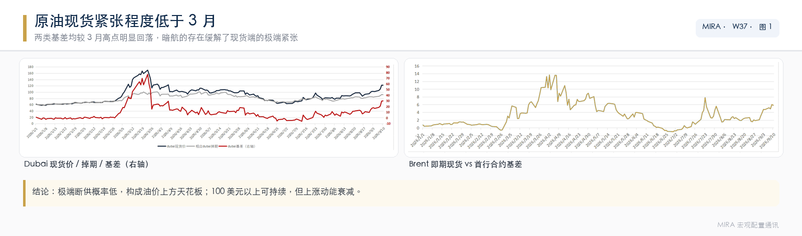
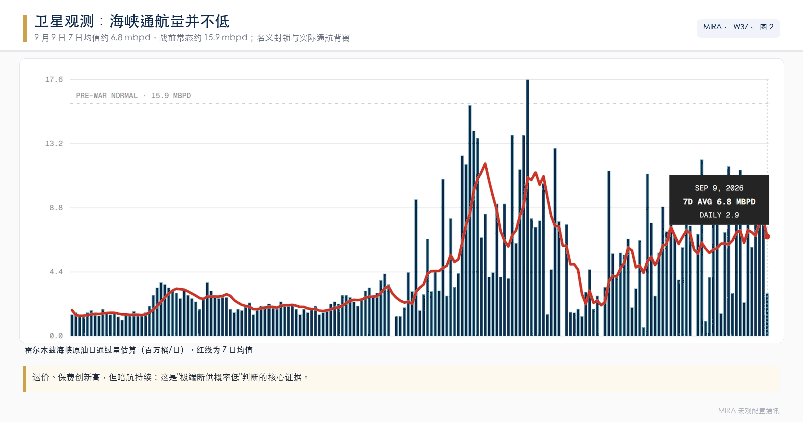
02利率：全球长端共振上行，压力长期存在沃勒放鸽但看 CPI → 非农拉回加息预期 → 贝森特救火无效 → 9/17 是分水岭
▾
本周边际变化
- 美联储二把手沃勒向市场释放"9 月不加息的可能性"，但依然取决于 9 月 11 日的 CPI 数据。
- 8 月非农超预期，又重新把加息预期拉起来。
- 目前通胀（加息门槛）的优先级远高于就业（降息门槛）。
- 贝森特救火：9 月 10 日将单次长期国债回购上限从 20 亿美元提升至 60 亿美元、干预日元，但市场反应消极，10Y 盘中触及三年新高，390 亿美元新债拍卖得标利率 4.834% 创该期限历史最高。
- 欧洲极右翼政党上台推升长端欧债利率，全球共振。
期限结构：中段抬升较快，超长端暂被沃什按住
市场把对财政的担忧放在 10Y。财政和货币都需要美债结构平缓，这也是 9 月加息概率上升、短端利率加速追赶长端的必要性所在。美债期限溢价并未缓解。
更高维度：利率的无解难题
美国全球战略收缩，从"提供全球公共品"退到"看守核心垄断权"。三个人各守一个定价锚：
全球关键能源航线的军事存在。油价温和上涨可以（页岩油赚钱），暴涨不行（选民满意度下降）。伊朗对海峡控制的加深触碰了美国核心利益。
温和通胀可以化债，恶性通胀会崩盘。需要长端利率缓慢上行但不失控。
加息预期太高容易拉爆 AI 融资，太低影响美联储信用。
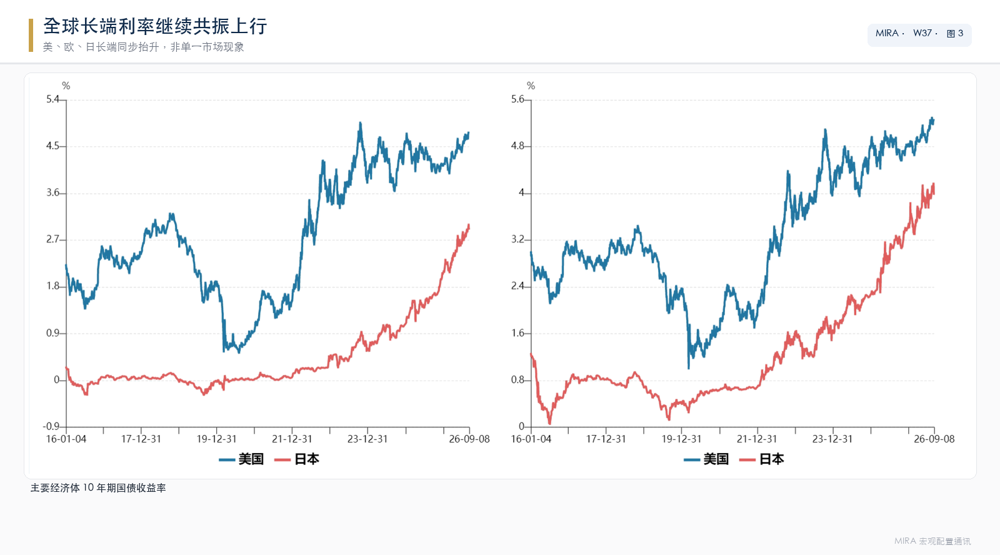
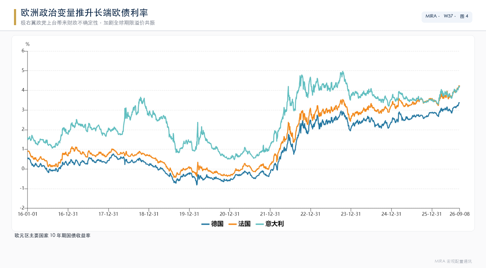
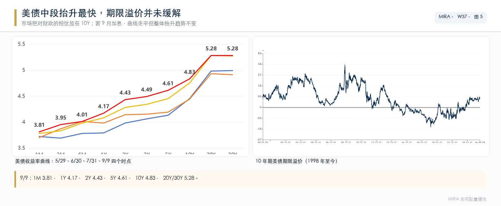
03美国 8 月非农：经济不弱，具备加息条件16.2 万超预期 → AI 基建传导至建筑制造 → 劳动供给缩水封死降息
▾
结构解读
前期拖累的休闲酒店、政府等反弹贡献了 70%，属于季节性噪音，意义不大。值得关注的是 AI 基建与设备投资拉动建筑业与制造业分别增加 2.2 万人和 1.6 万人，这是新经济向传统领域有效传导的关键信号（中国相反，传导偏弱）。坏的地方是信息和金融就业继续减少，AI 对白领的替代持续，这在意料之中。
K 型分化加剧，通胀粘性下降
- 最主要的薪资粘性通胀尚不明显。
- 居民实际收入缩水。
- 失业率 4.1% 其实已经不重要：虽然本月劳动参与率小幅提升，但长期美国劳动力总供应缩水的趋势无法逆转，意味着降息空间被封死。
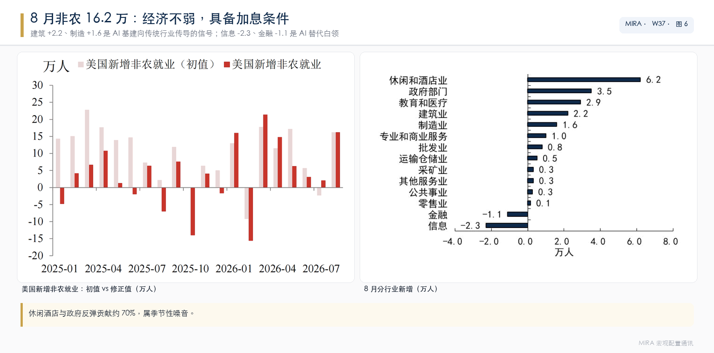
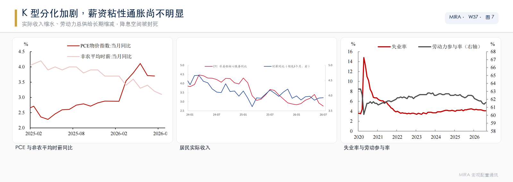
04科技 / AI：GPT-6 Astra，又一次量变到质变会答问题 → 会办事 → 硬件软件闭环 → 美股看二阶导，国内差距拉大
▾
哪里发生了质变
不只是一个"参数更大、显卡更多"的聊天模型，而是把 AI 从"会答问题"推向"会办事"：
- 推理能力：从"背答案"到"自己想办法"。
- 工程能力：从"写代码"到"管整个项目"。
- 计算机使用：从"你操作软件"到"它坐你工位上操作"。
- 物理世界任务：从"屏幕里办事"到"连机器人和实况"。
两条向上主线的共振
2023-2025 年的三个质疑（要建多少算力、最终谁付钱、回报在哪里）在此得到回答：上游资本开支得到了下游真实、持续的买单，并自我强化。距离可自我迭代的 AGI 尚早。
对美股：基本面越好，要求越苛刻
标普 500 成分股中未来 12 个月 EPS 预计增长的公司占比接近 90%，而通常领先该指标约六个月的 ISM 制造业 PMI 仅回升至 55 附近，两者过去大致同步，本轮差距加速扩大：美股盈利周期越来越脱离传统制造业，加速向 AI 基建靠拢。
对国内：差距重新拉大
- Astra 有防蒸馏机制；国内买不到 NVLink72 也无法自己训练；训练、蒸馏成本高，国产芯片能否赶上仍是未知数。
- 中国集成电路自给率已接近 70%，但高端逻辑、先进存储和 AI 芯片仍较多依赖进口。
- 美股新高 ≠ A 股新高：国家队流入不多，科技赛道缩圈更注重基本面，配置 IC 好于 IM。
- 如果科技制裁放松，有利于风险偏好。
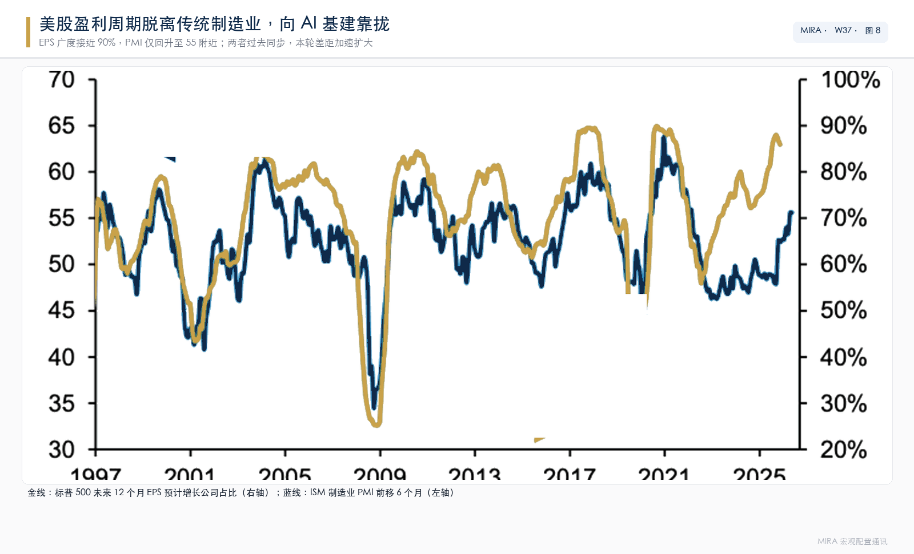
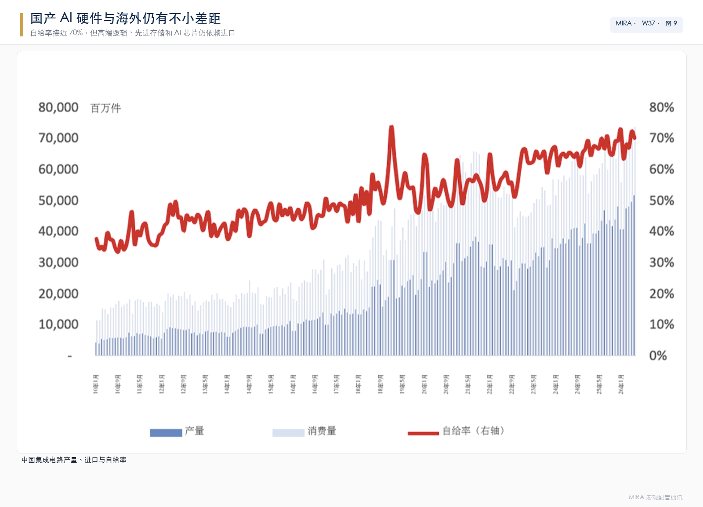
05国内政策：历史上第四次财政注资银行，注资 ≠ 牛市3600 亿补扩表能力 → 后三步不由财政决定 → 险资增量真实但 ≠ 净买入
▾
这是什么
- 是 924 政策的落地，不是新内容，与 2025 年那轮（特别国债注资中行、建行、交行、邮储约 5000 亿）是连续动作。本次把工行、农行补齐后，六家国有大行全部完成财政专项注资；同时首次把保险央企、政策性金融纳入"核心一级资本"框架。
- 顶层思路变化：过去是危机/改制驱动、单点补银行；现在是低通胀、低息差、低内源资本、高监管资本要求下的"跨周期资本储备"，把金融央企当成逆周期调节器统一加压。
历史四轮注资对比
| 时间 | 形式 | 背景与目的 |
|---|---|---|
| 1998 年 | 救火式 | 财政部发 2700 亿特别国债注资四大行（工 850、农 933、中 425、建 492），配合降准 13%→8%、成立 AMC 剥离约 1.4 万亿不良。背景是不良率 25%-30%、资本充足率不足 5%，本质是"技术破产修复"。对宏观是清理银行资产负债表，为 WTO 后信贷扩张打底；对股市直接传导很弱（大行未上市），但解除了系统性风险。 |
| 2003-2008 年 | 改制上市式 | 汇金用外汇储备向中行、建行、工行、农行分期注资约 790 亿美元，配合财务重组、引战、A/H 上市。目标是把国有银行改成现代公司治理主体，此后资本补充转由利润留存、IPO、可转债、配股市场化完成。宏观上对应加入 WTO 后出口→地产→基建信用周期，是"上市前重组"不是"逆周期刺激"。 |
| 2025 年 | 扩表式 | 5000 亿特别国债补中行、建行、交行、邮储核心一级。背景是净息差历史低位、信贷受资本约束、地产风险出清期需要大行承接科技/绿色/普惠/化债配套。逻辑从"救机构"转向"给信贷扩表能力"。 |
| 2026 年 | 预防性系统式 | 3000 亿特别国债 + 600 亿原股东，扩到工行、农行 + 进出口行/信保 + 四家保险。官方定调"前瞻性、系统性、未雨绸缪"。本质是把"银行资本工具"升级为"财政—银行—保险—政策性金融"四位一体资本前置。 |
传导链条：补的是扩表能力，不等于自动信用扩张
信用扩张的主要约束
- 净息差太薄：大行净息差约 1.30%，放一般贷款回报低，银行会更挑客户、倾向低风险权重资产（利率债、政金债、票据、优质央企），而不是全面流向实体，民企该缺钱还是缺钱。
- 民间意愿弱：地产去杠杆、地方平台控增量化债、民企资本开支谨慎，企业借钱看订单和 ROIC，不看银行有没有钱。历史上注资到信用提速通常有 1-2 年时滞，且必须配合财政项目、产业政策、地产预期修复。
- 资金投向：不像 2009-2017 年主要进地产 + 基建平台。本轮官方口径明确科技、先进制造、绿色、普惠、养老、外贸，这类资产的资本占用、信息不对称、久期都不利于大行快速放量，更像"定向扩表"而非"总量放水"。
- 特别国债要付息，注资换来的银行分红可部分对冲，但若实体回报起不来，财政端甚至可能亏钱。
政策效果推演
| 阶段 | 主要效果 |
|---|---|
| 短期（0-2 季度） | 防风险、稳银行指标、稳信贷"不掉量"，对增长拉动有限 |
| 中期（2-4 季度） | 若配合积极财政项目、地产企稳、设备更新/科技再贷款，可把大行对公科技/绿色/化债配套做起来，结构改善但总量未必跳升 |
| 长期 | 提升银行穿越低息差周期的能力，降低去杠杆风险，属于"托底潜在增速" |
| 新增顶层设计 | 企业出海 + 外循环：进出口行 + 信保注资直接服务稳外贸、走出去、出口信用保险覆盖面，比单纯给大行补资本更有针对性 |
中国缺少的是把货币转化为有效需求的渠道
和美国 2008 年不同，本轮房地产下行，中国家庭和企业用于偿还本息的收入占比不降反升，说明过去几年的宽松政策尚未有效减轻现金流压力、修复私人部门资产负债表。
对股市：注资 ≠ 牛市
- 银行/保险股：估值修复，缓解了"资本不够和卖股"的抛压，但新增资本摊薄了 ROE。
- 险资入市：长期资金增量为真，但"注资额 ≠ 净买入"。截至 2026 年二季度，保险资金运用余额超 40 万亿，股票 + 基金约 6.39 万亿、占比 16.23%。
- 直接配置法：700 亿注资按既有资产结构，债券吸收大部分，股票/基金增量可能仅百亿元级。
- 资本撬动法：新增核心资本按偿付能力风险因子可"承载"更多权益敞口，理论可达千亿级，但上限不是净买入。
- 实际节奏：未来 1-3 年险资对高股息（银行、公用事业、煤炭、电信）、新经济（半导体、高端制造、医药、绿电）的"底仓化配置"增加，降低市场波动率，不必然推高指数。
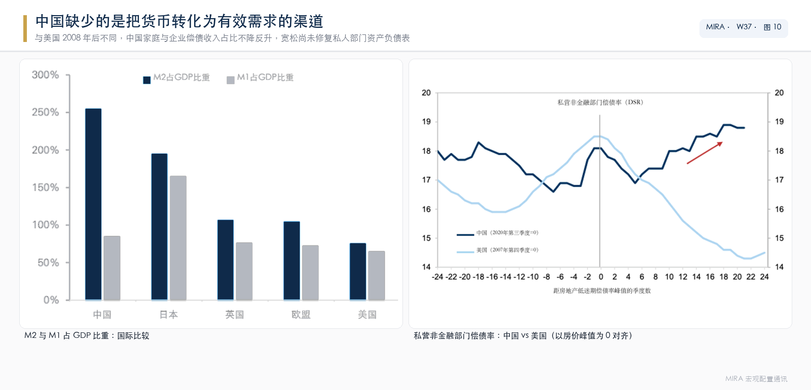
06国内数据与旧经济：8 月通胀、出口与煤炭叙事PPI 靠上游与输入性 → 出口靠涨价 → 煤炭成国内工业品的锚
▾
8 月通胀：输入性因素 + AI 驱动，旧经济仍偏弱
- 算力需求对物价的影响从 PPI 传导至 CPI（通信工具 CPI 同比明显抬升）。
- 汽车、建材、部分食品加工等传统行业价格仍偏弱，产能过剩尚未缓解。
- PPI 的推动力是上游、供给、输入性，不是内生自发性需求推动。
8 月出口：继续狂飙
- 8 月美元计价出口同比升至 25%。
- 不再降价换量：出口价格贡献已超过数量贡献。
- AI 景气周期一枝独秀。
旧经济：煤炭成为国内工业品的锚
煤炭同时受能源链条（原油→成品油→煤）与地缘（俄乌、美伊、中蒙关系）两条线推动。
- 不是 2021 年的重演。
- 产业链利润分化：上游赚、中游亏、下游弱。单边裸多不可取，跨品种、多空对冲是主要姿态。
- 煤炭叙事可能持续整个下半年，成为国内工业品的锚，独立于海外宏观变量。
下半年额外新增变量：中美关系
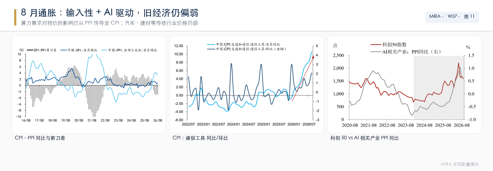
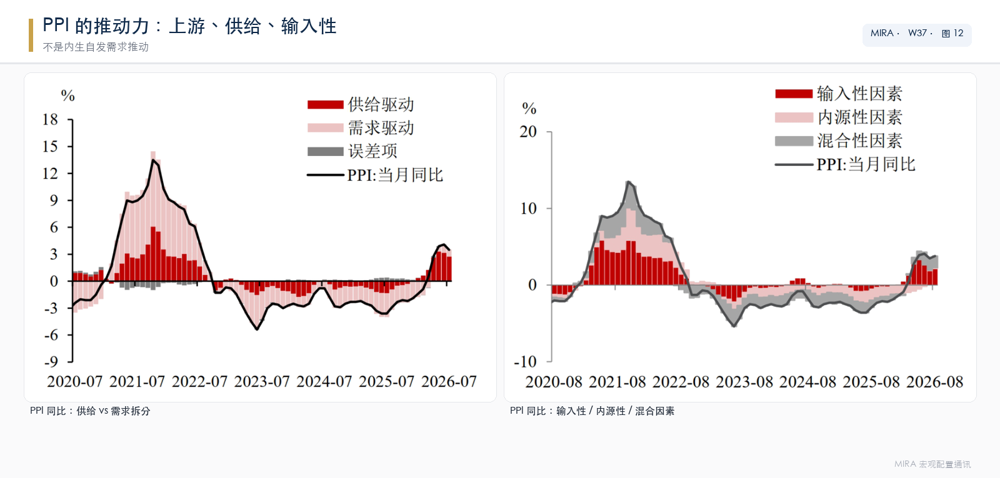
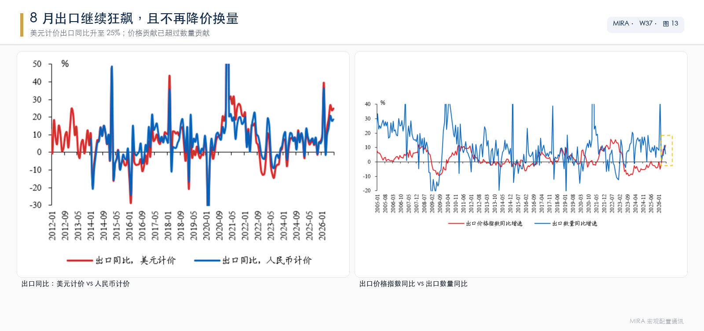
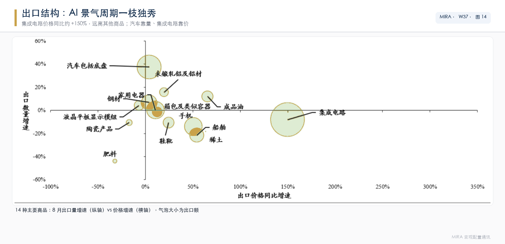